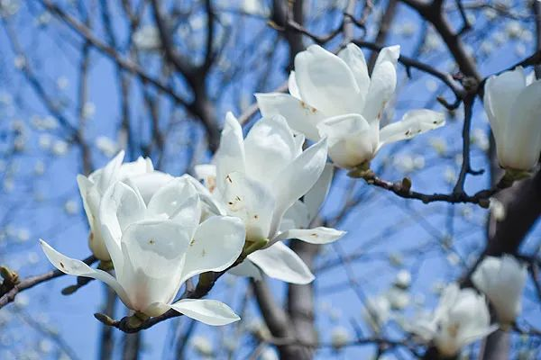

胡展奋：中国最早口罩小考
原文链接 备份链接 中国是文明古国，无论“唾”还是“咳”，先人都早早地有了规范，明令禁止乱唾。 冲突的发生非常偶然。 那天麦德龙超市结账通道人人都戴着口罩，突然人堆里一位老爷叔拉下口罩就是一顿暴咳，那暴咳绵长而剧烈，末了还风箱似地抽足气， …
明天春分。今年的春天特殊，漫道的樱花，空气里的甜香，这些美好事物带来安慰，我们比任何时候都更加爱生命。

春天来临的第一个征兆，不是柳树干硬的枝条上裹了淡若轻烟的青纱，不是去年扔在阳台上的花盆里抽出细若蚁腰的叶柄，而是忽然有一天出门发现天空变高了——像是被谁一下顶开了盖子，阳光毫无障碍地从极高处倾泻而下。忽然会有点眩晕，就像是睁开眼发现自己在升往天空的电梯里。这时各式各样的鸟叫也清晰起来，咕咕，唧唧，啾啾，还有三个音节的、四个音节的……虽然听不懂，媚丽得很，婉转得很。有些树还一片叶子也没，但鸟儿们不挑剔，穿梭上下，迷离左右，并在树与树之间、树与檐之间、檐与檐之间，开辟了无数条空中航线。只要驻足一分钟，就被拖入到这无限的万花筒般的缤纷热闹中去。这时候你就会感叹：春天啦！
我向来不大主张赋予春天太多的象征意义，春天要承受的太多啦。地球绕着太阳公转，加之地球自转轴的斜率，使这一单调的环形运动增加了热量（我想象它是一把橙色的粉刷）在南北回归线之间来回涂抹的乐趣，于是乃有了四季。只有笔杆上挂着半瓶醋的文人才会对此大惊小怪，大呼小叫。地球上的诸多生灵在亿万年进化演变中摸索出了与热量共进退、相偕行的生存之道，每种生命——植物、动物、人类都有着自己的生命周期，那把远道而来的热量刷“按宇宙惯例”，把每个大大小小的周期解码。对人来说，是又开始了一年，对花来说，是又开始了一生，对鸟来说，则又开始了一辈子的七分之一。春天转瞬即逝，人世的愿景不能光指望一两个意象的美丽。

但今年的春天肯定是特殊的，需要物候的加持。别的就不说了，说说我两个朋友。一个朋友彦清在北京，父亲从鹰潭老家打来电话：“终于能从小区里出来了，走到江边无人之地，漫道樱花，空气里都是蜂蜜的甜香，想分享给你，所以给你打个电话。”她挂了电话，想回家了——但还不能。我另一个朋友安庆原本居北京写作，过年回湖北武穴看父母，就此留到现在，索性朋友圈里图文直播乡间的春天，江边（好巧，也有一条江，中国人的原乡哪能缺得了“江边”二字）盛放油菜花，地耳，黎蒿——“早上听到鞭炮声，下楼问父亲，他说是花朝节，是个看花的节日。果然看到家家户户放鞭炮烧纸。到了下午，春雨淅沥，响起了第一声春雷。马上要春耕了。”
日轮不停，时序照转，春天的这些美好事物——洇染半江的樱花，空气里的甜香，湿润的春雷，楚楚的地耳，于今既带来安慰，又泛起凄清，我们比任何时候都更加爱生命。
最后说说我的一个发现吧。近来常在小区花径闲逛，意外的是，山茶、二叶李、樱花、结香、迎春，并没有比往年开得更多更旺，按我预想，无人打扰，草木蔓延，春花该更繁盛才是的。往年赏花人多，处处“花见疯”，没想到，花没有了人来赏，也无心怒放了。花也有“人来疯”么？等着。
关于我们：
本公众号乃上海发行量最大的报纸《新民晚报》副刊《夜光杯》的官方微信，《夜光杯》是中国历史最悠久的报纸副刊，在微信平台，我们将以全新的面貌继续陪伴您。欢迎免费订阅，我们将每日精选两篇新鲜出炉的佳作推送到您的手机。所有文章皆为《夜光杯》作者原创，未经允许不得转载。
点击下面的篇目链接，可重读夜光杯微信公众号2月高点击率美文：
原文链接 备份链接 中国是文明古国，无论“唾”还是“咳”，先人都早早地有了规范，明令禁止乱唾。 冲突的发生非常偶然。 那天麦德龙超市结账通道人人都戴着口罩，突然人堆里一位老爷叔拉下口罩就是一顿暴咳，那暴咳绵长而剧烈，末了还风箱似地抽足气， …
原文链接 备份链接 在五十多天的隔离里，这不是最好的一天，也不是最坏的一天，这是最典型的一天。 这不是最坏的一天，在五十多天的隔离里。 这不是最好的一天，在五十多天的隔离里。 五十多天往六十天奔了，哪一天解封？还是一个变数。医院还有上万确 …
原文链接 备份链接 随遇，或者不随遇，经每一次日常里的无常，培植日常的力量。 不存侥幸心，熟悉的亲友邻居们年前安排好的旅游都取消了，广州的，浙江的，法国的，损失也就损失了，安全乃第一要素。家母说大家各自保平安，待清明时节再团聚吧。心念的展 …
原文链接 备份链接 这场战役，我们需要每一个人，进入社会角色，带着诚挚，同舟共济。 （图：王辉） “这一切与英雄主义无关，而是诚挚的问题。这种理念也许会惹人发笑，但是同鼠疫做斗争，唯一的方式就是诚挚。” “诚挚是指什么呢？” “我不知道诚 …
原文链接 备份链接 想起他穿着厚的棉衣急赶赶骑车送菜的样子，不像理工男了，就是一个送菜的小哥。 “凌晨1点多起床，去汉口北取菜，因为有些地方禁行，平时只需要半个小时的路途，现在要一个多小时，一天至少要跑两趟。等到回来大概早晨7点多，然后我 …